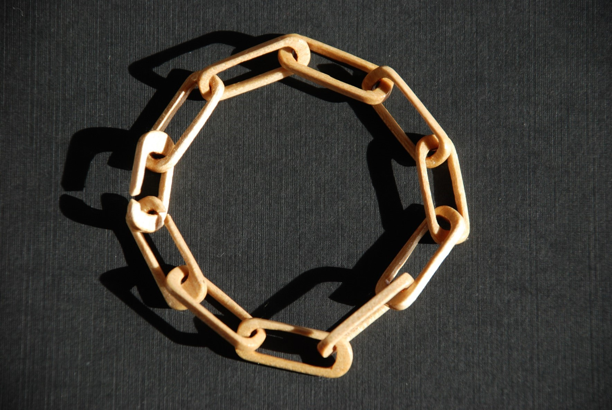
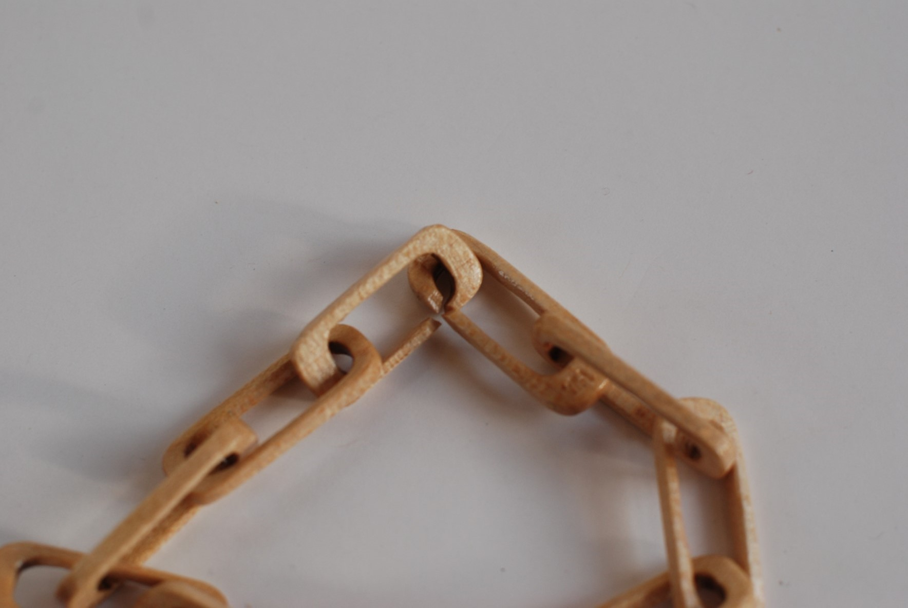
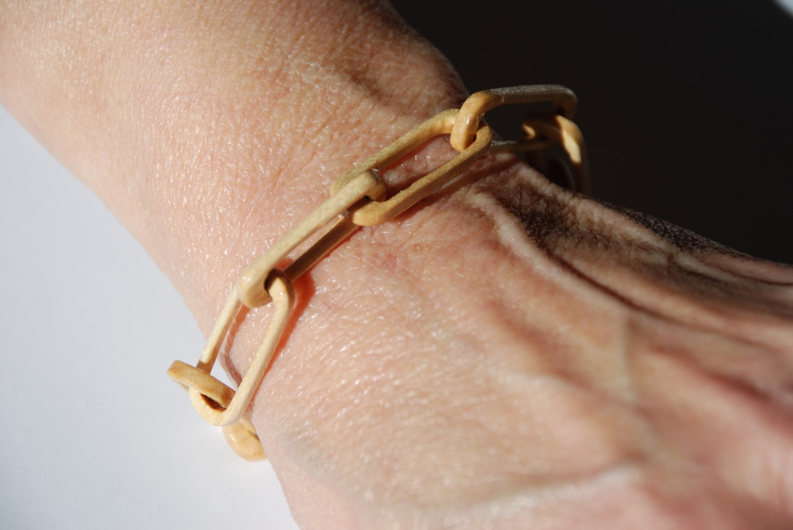

These LOVE chain bracelets are hand-carved in the USA from square sticks of solid wood. Each chain link is hand carved within its neighbors, hand sanded, polished and a clear glossy marine finish is applied. The natural color of the sycamore wood varies from creamy white to light brown with freckles, is lightweight, strong and warm. Each link measures approximately 1.2" long, 0.5" wide and 0.17" thick. One end link is signed with my initials "WHO".

The two end-links have offset "X" gaps (see photo) that, when positioned perpendicular, slip together to connect the bracelet around your wrist. Then, you can flip the end-links end-for-end to "lock" the latch. Simple instructions for how to easily put on and take off the bracelet by yourself are enclosed.

The "Love Chain" dates back many generations according to an active chain carver in Liberia quoted by folklorist William Wiggins. As early as the Viking era, wood carvers made decorative spoons with chains as love tokens. The hand-carved wooden chains were whittled on sailing ships, in logging camps and in rocking chairs on porches. I have adapted this very old art form into a stunning comfortable bracelet for women or men.
